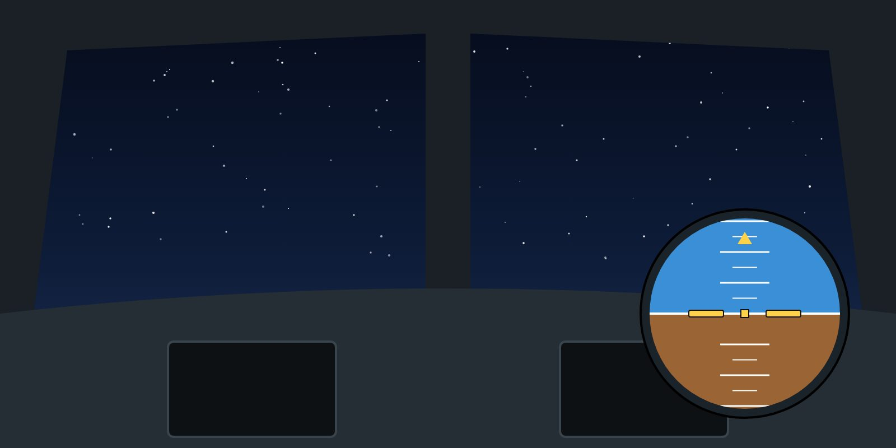

Lesson 05: Window of Circadian Low, Extensions and the Commander's Authority
Lesson 5 of 7 · about 9 min
Learning objectives
Apply the WOCL reductions for duties that start in, end in or include the WOCL.
Decide whether a 1 h extension is permitted.
Describe the commander's authority and the waivers.

The window of circadian low: 02:00 to 05:59 local.
The window of circadian low (WOCL)
The WOCL is the period from 02:00 to 05:59 local time, when the body is least alert.
The WOCL reduction depends on where the duty time period starts. Red: a duty starting at 05:00 has 1 h in the WOCL — reduce the DTP by 1 h (100 %). Amber: a duty ending at 04:00 has 2 h in the WOCL — reduce by 1 h (50 %).
DTP starts in the WOCL → reduce by 100 % of the time spent in the WOCL, up to 2 h. Check-in 05:30 → 30 min in the WOCL → −30 min.
DTP ends in the WOCL, or includes all of it → reduce by 50 % of the time spent in the WOCL. Check-out 04:00 → 2 h in the WOCL → −1 h.
Tip
When the duty ends in the WOCL, the reduction changes the end time, which changes the time in the WOCL. Work it out step by step — or use the calculator in Lesson 7, which solves it for you.
Extension of the DTP
Extension of the DTP by 1 hour. A DTP that follows an extension and starts between 22:00 and 04:59 is limited to 11 h 45. Medevac and emergency flights are exempt from these restrictions.
When extensions are used on two consecutive DTPs, the rest due before and after the flight is taken in a row.
All these restrictions are cancelled for medevac and emergency flights.
Commander's authority
After consulting the crew and with their agreement, the commander may increase the DTP by up to 2 h (crew not reinforced).
If, on the last leg, unforeseen conditions after take-off would exceed the authorised extension, the flight may continue to the destination or the alternate.
The commander may reduce or extend the DTP, or extend the rest, in case of severe crew fatigue.
When a DTP or a rest is extended or reduced by 1 h, a copy of the commander's report is sent to the Authority within 28 days.
Waivers by the Authority
Urgent (SAR) flights, rescue flights for aircraft maintenance, finishing a flight after unforeseen conditions, national interest or defence flights, and high company workload — provided the DTP limit is not exceeded by more than 20 h in 28 days and 100 h in a year.
Key takeaways
WOCL = 02:00–05:59 local.
Starts in WOCL: −100 % of the time inside (max 2 h); ends in / includes WOCL: −50 %.
+1 h extension: not with more than 6 legs, nor with more than 2 h in WOCL and more than 4 legs; max 2 per 7 days.
Commander: up to +2 h with crew agreement; report to the Authority within 28 days.
Knowledge check
A duty starts at 05:00 local. How much WOCL reduction applies?
None
30 min (50 % of 1 h)
1 h (100 % of 1 h)
2 h
Answer: C. It starts in the WOCL: 05:00–06:00 = 1 h inside, reduced by 100 % = 1 h.
Training material only. It does not replace the Aircraft Flight Manual, FCOM, QRH, MEL or the Domestic Airlines Operations Manual, which always take precedence.